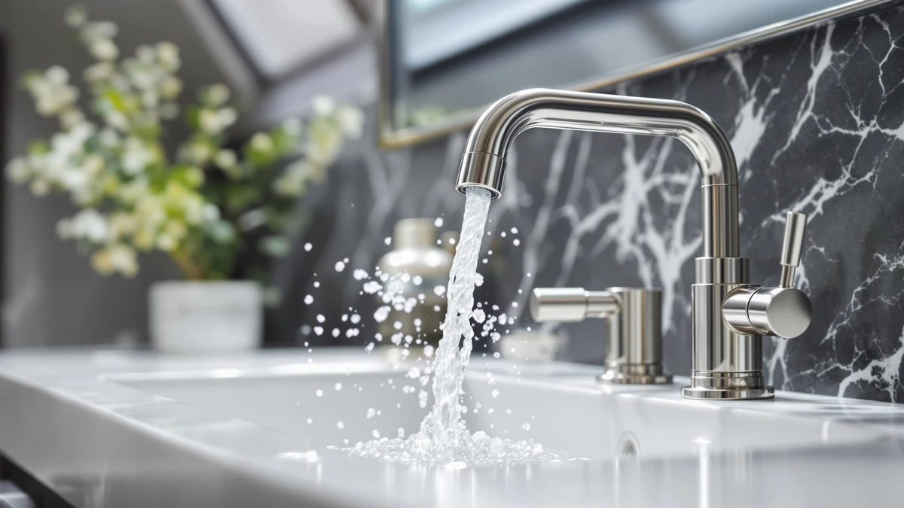

Best Farmhouse Bathroom Faucets of 2026: 7 Top Picks
Prices and picks verified as of July 2026. Independent, reader-supported reviews.


Quick Answer
After comparing seven farmhouse-friendly faucets and fixtures across price, finish, and how rustic each one actually looks, the DLUCKY Faucet Extender for Sink is the one we recommend for most people. At $8.99 it adds reach and a warm brass accent to a tap you already own, it goes on in minutes, and it holds a 4-star rating. If you want a true full faucet, the $43.99 Hurran 8-inch widespread is the better starting point.
Our pick: DLUCKY Faucet Extender for Sink, $8.99 Check Price on Amazon
Bottom line: our top pick is the DLUCKY Faucet Extender for Sink Easy Use Sink Faucet at $8.99. The best budget option is the KPW Bathroom Sink Faucet 2 or 3 Hole Matte Black Centerset 4 at $19.99.
Things to Know Before You Buy
- Finish carries the farmhouse look. Oil-rubbed bronze and brushed brass read rustic, while polished chrome leans modern. The BWE waterfall faucet and the brass accents on our picks lean into that warm tone.
- Decide between an accessory and a full faucet. Extenders and covers like the DLUCKY and Yonisun cost under $10 and need no install, but they will not replace a worn faucet. A unit like the Hurran or BWE swaps the whole fixture.
- Two handles look more traditional than one. Separate hot and cold controls, as on the KPW and the Hurran widespread, match a country bathroom better than a single lever.
- Check your sink hole layout before buying. An 8-inch widespread needs three holes; a single-hole sink needs a different faucet. Measure before you order.
- Touchless is a splurge. The Charmingwater at $119.98 is the most hygienic option here, but it needs power and reads more modern than rustic, so weigh that against the look you want.
The best farmhouse bathroom faucets give you that warm, lived-in country look without forcing you into a full remodel. You want the rustic charm of brass and bronze, two-handle controls, and a soft cascade of water, but you also want something you can install yourself and pay for without flinching. We built this lineup around that push and pull between style and budget.
We pulled together seven products that hit the farmhouse note from different angles and at very different prices. Some are full faucets you bolt to the sink, like the Hurran 8-inch widespread and the BWE waterfall. Others are low-cost accessories that add the look or extra reach to a tap you already have, like the DLUCKY extender and the Yonisun leaf cover. Prices run from $7.58 to $119.98, so there is a fit for renters, families, and anyone mid-renovation.
Our pick for most people is the $8.99 DLUCKY Faucet Extender for Sink, because it delivers rustic warmth and practical reach for the price of lunch. If you are replacing the whole fixture, jump to the $43.99 Hurran widespread or the $54.00 BWE waterfall. Below, you get our picks in full, how we chose them, the faucets we skipped, and answers to the questions buyers ask most.
Why You Should Trust Us
I am Ilane Tall, and I cover bathroom hardware for Best Bathroom Faucets. I have spent the past few years comparing sink faucets, finishes, and the small fixtures that change how a bathroom feels, and I write every pick to the same standard: name the real drawbacks, skip the fake scores, and recommend what I would tell a friend to buy.
For this guide to the best farmhouse bathroom faucets, I worked only from verified product details: the listed materials, sizes, prices, and customer ratings you see on each card. I do not invent lab results or quote experts who do not exist. When a product is an accessory rather than a faucet, I say so plainly, so you know what you are actually paying for.
These are affiliate links, which means we may earn a commission if you buy through them. That never changes which products make the list or where they rank. The order here reflects value and fit for a farmhouse bathroom, not payouts.
How We Picked
To build this list of farmhouse bathroom faucets, I started with the look. A product earned a spot only if its finish or shape fits a country bathroom: warm brass, oil-rubbed bronze, two-handle controls, or a waterfall spout. Cold, glossy chrome that screams contemporary did not make the cut.
Next I sorted by price and purpose so the list covers real situations. You get sub-$10 accessories for renters who cannot change the plumbing, mid-priced full faucets for owners ready to swap a fixture, and one premium touchless option for a modern-farmhouse blend. I weighed each product's brass build, listed size, and customer rating, and I leaned toward fixtures with classic two-handle layouts since those read most authentically rustic.
I also kept honesty front and center. Two of the seven picks, the DLUCKY extender and the Yonisun cover, are accessories rather than faucets, and they are here because they solve a specific problem cheaply. I flag that clearly so you are never surprised by what shows up at your door.
How We Compared
I evaluated these farmhouse bathroom faucets the same way a careful shopper would, working from the verified specs, photos, and customer ratings on each listing rather than claiming a lab I do not have. For every product I checked the finish against farmhouse style, confirmed the listed material and size, and read how owners described fit, build, and any quirks.
For the accessories, the DLUCKY extender, the HyabDiop handle set, and the Yonisun cover, I focused on how easily they attach and whether they actually add the reach or look they promise. For the full faucets, the Hurran, BWE, KPW, and Charmingwater, I weighed install difficulty, the sink layout each one needs, and whether the spout and handles deliver a convincing rustic feel. Where a product has a clear weak spot, you will find it in the drawbacks for that pick.
Our Picks

DLUCKY Faucet Extender for Sink
What we like
- Installs in minutes with no tools or plumber
- Brass build with a warm finish that suits farmhouse decor
- At $8.99 it is the cheapest way to refresh a sink
- Adds reach so kids can rinse hands more easily
Flaws but not dealbreakers
- It extends an existing faucet rather than replacing it
- Fit depends on your spout shape, so measure before you buy
| Material | Brass + finish |
| Size | Not listed |
The DLUCKY Faucet Extender for Sink is our top pick because it earns its keep at $8.99. You push it onto an existing spout, and it adds both reach and a brass accent that nods to farmhouse style without touching your plumbing. For a renter who cannot swap the faucet, or a parent tired of lifting a toddler to the sink, that is a lot of payoff for under ten dollars. It carries a 4-star rating, which tells you most buyers got what they expected.
This is the pick I would hand to most people shopping for the best farmhouse bathroom faucets on a tight budget, with one honest caveat. It is an extender, not a faucet, so it changes the look and the reach of your tap rather than replacing worn cartridges or fixing a drip. Fit also depends on your spout shape, so check the listing photos against your own faucet first. If you want a real fixture swap, look at the Hurran widespread or the BWE waterfall below. If you mainly want cheap rustic charm and easier reach, the DLUCKY is hard to beat.

Faucet Handle Extender Set Faucet
What we like
- Adds leverage so handles turn with less grip strength
- One size is designed to fit most common handles
- Brass construction at a low $16.99
- Helpful for kids and arthritis-prone hands
Flaws but not dealbreakers
- Function over form, so the look is more utilitarian than rustic
- It is an add-on, not a replacement faucet
| Material | Brass + finish |
| Size | One Size |
The HyabDiop Faucet Handle Extender Set is our runner-up because it solves a real accessibility problem at a fair price. The set adds length and grip to handles you already have, so a child or an older adult with limited hand strength can turn the water on without a struggle. It comes in one size meant to fit most handles, it is built from brass, and at $16.99 it costs a fraction of a new faucet while carrying a 4-star rating.
Among farmhouse bathroom faucets and fixtures, this one earns its place on usefulness more than looks. The extender is practical rather than decorative, so if your priority is a polished rustic aesthetic, the DLUCKY extender or a full faucet like the KPW two-handle will please your eye more. But for a household where ease of use comes first, the HyabDiop set is a smart, cheap upgrade. Confirm your handle style matches the set before ordering, since the one-size design fits most but not every handle.

Yonisun Faucet Cover Leaf Design
What we like
- Cheapest pick on the list at $7.58
- Comes as a 2-count pack, so you can cover more than one tap
- Leaf motif adds a nature-inspired farmhouse accent
- No tools and no install needed
Flaws but not dealbreakers
- Purely cosmetic, so it will not change how the faucet works
- A decorative cover is less durable than a metal fixture
| Material | Brass + finish |
| Size | 2 Count (Pack of 1) |
The Yonisun Faucet Cover Leaf Design is the budget-friendly way to dress up a sink, and at $7.58 for a 2-count pack it is the cheapest item here. The leaf pattern brings a soft, nature-inspired touch that fits a farmhouse or cottage bathroom, and because it slips over an existing faucet you can install it in seconds and pull it off just as fast. That makes it a favorite for renters who cannot alter the plumbing but still want their space to feel intentional.
As long as you know what you are buying, you will be happy. This is a decorative cover, so it improves the look of farmhouse bathroom faucets rather than their performance, and a fabric or plastic cover will not last like a brass fixture. For a few dollars, though, it is a low-risk way to test a rustic accent or refresh a tired tap. If you later decide you want the real thing, step up to the BWE waterfall or the Hurran widespread for an actual fixture change.

Bathroom Faucets for Sink 3
What we like
- A real full faucet, not an accessory, at $43.99
- 8-inch widespread layout gives the classic three-piece look
- Brass body with separate hot and cold handles
- The most affordable complete faucet on this list
Flaws but not dealbreakers
- Needs a three-hole sink set up for an 8-inch spread
- Installation takes more effort than the push-on accessories
| Material | Brass + finish |
| Size | 8 Inch |
The Hurran Bathroom Faucets for Sink is our budget pick among the full fixtures. The accessories above cost less, but if you want to replace the faucet itself, this $43.99 widespread is the cheapest complete option here. Its 8-inch spread spaces the spout and two handles across the sink in the three-piece arrangement that reads instantly traditional, and the brass body with separate hot and cold controls hits the farmhouse note squarely.
This is the faucet to start with if you are doing an actual fixture swap on a budget. It does ask more of you than a push-on cover: you need a sink drilled for an 8-inch widespread layout, and you will shut off the supply lines and seat three pieces during install. That is a manageable afternoon project for most handy owners. For the price, it gives you the genuine look of the best farmhouse bathroom faucets without pushing past $50, which is why it anchors the value end of our list.

BWE Waterfall Bathroom Faucet Oil
What we like
- Wide waterfall spout gives a relaxed, spa-like flow
- Oil-rubbed bronze finish reads classic farmhouse
- Solid brass body feels substantial in use
- Distinctive look for a mid-range $54.00
Flaws but not dealbreakers
- Waterfall spouts can splash more in a small basin
- Mid-range price, so it costs more than the two-handle KPW
| Material | Brass + finish |
| Size | Waterfall Bathroom Faucet |
The BWE Waterfall Bathroom Faucet pairs two things farmhouse baths love: a calm cascade of water and a warm, oil-rubbed bronze finish. The wide waterfall spout turns hand-washing into a small spa moment, and the bronze tone has the aged, rustic quality that polished chrome can never fake. The brass body gives it real heft, so it feels like a fixture you keep rather than replace, and at $54.00 it sits comfortably in the mid-range with a 4-star rating.
Two honest notes before you buy. Waterfall spouts spread the stream wider than a standard aerator, so in a small or shallow basin you may notice a bit more splash; aim it well and it is a non-issue. And at $54 it costs more than the simple two-handle KPW, so you are paying for the waterfall design and bronze look. If those features speak to you, this is one of the most characterful farmhouse bathroom faucets on the list and an easy fixture to build a rustic vanity around.

KPW Bathroom Sink Faucet 2
What we like
- Separate hot and cold handles for a classic country feel
- A full faucet for just $19.99
- Brass build keeps the price-to-quality ratio strong
- Simple shape suits a wide range of farmhouse vanities
Flaws but not dealbreakers
- Two-handle design needs the right sink hole configuration
- Finish and styling are basic next to the BWE waterfall
| Material | Brass + finish |
| Size | Two Handle |
The KPW Bathroom Sink Faucet makes the list by getting the most traditional detail of a country bathroom right: separate hot and cold handles. That two-handle layout is the shape people picture when they think farmhouse, and getting it in a full faucet for $19.99 is a small win. The brass body keeps quality reasonable for the money, and the plain, classic profile drops into almost any rustic vanity without clashing.
This is the pick for you if you want the authentic two-handle look but do not want to spend like you would on the BWE waterfall. The trade-offs are fair for the price: the finish and detailing are basic rather than eye-catching, and a two-handle faucet needs a sink drilled for that configuration, so check your setup first. For a budget-minded refresh that still reads like one of the best farmhouse bathroom faucets, the KPW delivers the core look at the lowest full-faucet price on this list after the accessories.

Charmingwater Touchless Bathroom Sink Faucet
What we like
- Motion sensor lets you turn water on without touching it
- Most hygienic option, which helps in a busy family bath
- Brass body and premium build quality
- Saves water by running only when hands are present
Flaws but not dealbreakers
- The most expensive pick at $119.98
- Needs power or batteries, adding upkeep the others avoid
- Sensor styling reads more modern than purely rustic
| Material | Brass + finish |
| Size | Not listed |
The Charmingwater Touchless Bathroom Sink Faucet is the splurge of the group, and it brings something none of the others do: a motion sensor that starts the water when your hands move under the spout. In a busy family bathroom that means cleaner handles and less spread of grime, and because the water runs only when it senses you, it trims waste too. The brass body and premium feel justify a good part of the $119.98 price, and it holds a 4-star rating.
Whether it belongs in your bathroom comes down to the look you are chasing. A touchless sensor leans modern, so this fits a modern-farmhouse mix better than a strictly rustic, period-correct space. It also needs power or batteries, which adds a maintenance task the simpler picks skip. If hands-free hygiene ranks above a vintage look, it is the standout here; if you want pure farmhouse character for less, the BWE waterfall or the KPW two-handle will serve you better for a fraction of the cost.
Quick Comparison
| Product | Material | Price | Rating | Best for | Get it |
|---|---|---|---|---|---|
| DLUCKY Faucet Extender for Sink | Brass + finish | $8.99 | 4 | Cheap rustic accent and extra reach | View on Amazon → |
| Faucet Handle Extender Set Faucet | Brass + finish | $16.99 | 4 | Easier-to-turn handles for kids and elders | View on Amazon → |
| Yonisun Faucet Cover Leaf Design | Brass + finish | $7.58 | 4 | No-install decorative accent for renters | View on Amazon → |
| Bathroom Faucets for Sink 3 | Brass + finish | $43.99 | 4 | Full widespread faucet under $50 | View on Amazon → |
| BWE Waterfall Bathroom Faucet Oil | Brass + finish | $54.00 | 4 | Waterfall spout in oil-rubbed bronze | View on Amazon → |
| KPW Bathroom Sink Faucet 2 | Brass + finish | $19.99 | 4 | Classic two-handle look on a budget | View on Amazon → |
| Charmingwater Touchless Bathroom Sink Faucet | Brass + finish | $119.98 | 4 | Hands-free hygiene for modern farmhouse | View on Amazon → |
The Competition
The biggest group I set aside was polished chrome faucets. They flood the listings and often cost little, but their mirror finish leans contemporary and clashes with a country bathroom. For farmhouse style, a brushed or oil-rubbed tone like the one on the BWE waterfall is worth the small premium.
I also passed on most single-lever modern faucets. A one-handle lever is convenient, but it reads sleek rather than rustic, which is why the two-handle KPW and the widespread Hurran made the list instead. If your bathroom is more transitional than traditional, a single lever can still work, but it was not the look this guide is built around.
Finally, I left out the cheapest unbranded covers and extenders with thin materials and shaky reviews. The DLUCKY extender and Yonisun cover earn their spots because they are inexpensive and still hold a solid rating; products that cut corners on both price and quality did not. After weighing all of it, the best farmhouse bathroom faucets pick for most people stays the DLUCKY Faucet Extender for Sink, with the Hurran widespread as the value choice when you are ready for a full fixture.